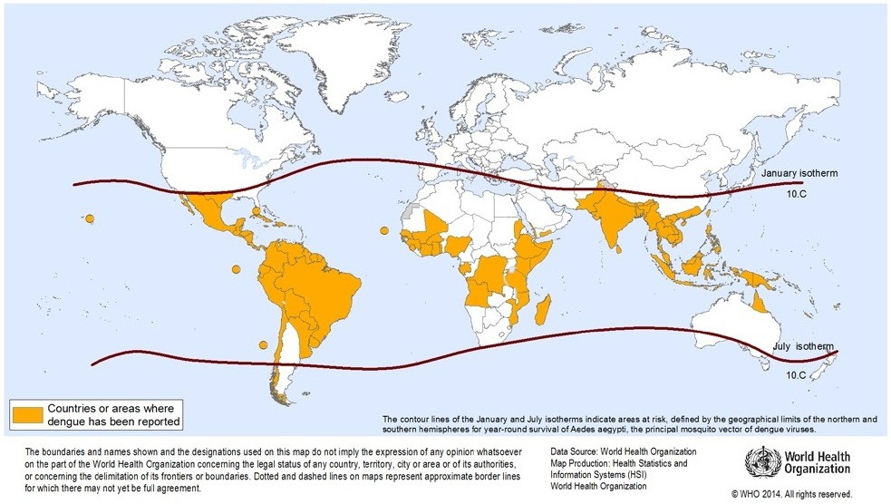

Dengue
Arbovirose à Flavivirus — 4 sérotypes (DENV-1 à DENV-4)
Première cause de fièvre au retour de voyage après le paludisme. 429 cas déclarés en Suisse en 2024 — record historique. Maladie bénigne dans la grande majorité des cas chez le voyageur, mais la phase critique (à la défervescence) peut être piégeuse. Pas de traitement spécifique — le suivi clinico-biologique rigoureux est la clé.
Épidémiologie
Données mondiales
- 2024 : année record — >14,4 millions de cas déclarés à l'OMS, dont 7,7 millions confirmés en laboratoire, 52 738 cas sévères, 11 201 décès[8,22]
- Les Amériques représentent >90 % des cas en 2024 ; Brésil seul : >10 millions de cas et 6 321 décès[8]
- Transmission endémique dans >100 pays ; >5,6 milliards de personnes à risque[25]
- 4 sérotypes (DENV-1 à DENV-4) ; distribution géographique et temporelle variable ; co-circulation fréquente
Contexte suisse
- En 2024, 429 cas confirmés déclarés à l'OFSP — nombre jamais atteint ; en forte hausse après le creux COVID (26 cas en 2021, 261 en 2023)[1]
- Tous les cas sont exclusivement importés ; aucune transmission autochtone documentée en Suisse à ce jour[1]
- Provenance principale : Asie du Sud-Est (50,4 %), Asie du Sud (14,9 %), Caraïbes (10,9 %), Amérique du Sud (9,2 %)[2]
- Déclaration obligatoire — délai 1 semaine : laboratoire → OFSP via CH-ELM ; médecin → médecin cantonal[1]
Dengue chez le voyageur — données GeoSentinel
| Paramètre | Données | Source |
|---|---|---|
| Cohorte GeoSentinel 2007–2022 | 5 958 voyageurs avec dengue ; âge médian 33 ans, 50,5 % femmes, durée médiane du voyage 21 jours | [2] |
| Dengue compliquée | 95/5 958 (1,6 %) compliquées, dont 27 (0,5 %) sévères ; 1 seul décès (cause non liée à la dengue) | [2,3] |
| Hospitalisation | 26,7 % des voyageurs hospitalisés | [2] |
| Anomalies biologiques (cas compliqués) | Thrombopénie 78 %, transaminases élevées 62 %, saignement 52 %, fuite plasmatique 20 % | [3] |
Contexte européen — émergence autochtone
- Italie 2024 : plus grande épidémie autochtone jamais enregistrée en Europe — 86 cas confirmés à Fano (Marche), DENV-2[4]
- France 2024 : record de 85 cas autochtones[5]
- Aedes albopictus (moustique tigre) présent au Tessin et dans d'autres régions frontalières du sud de la Suisse ; compétence vectorielle confirmée pour au moins 3 sérotypes DENV[7]
- Augmentation progressive des événements de transmission locale d'arbovirus à Aedes en Europe ; en moyenne ×1,25 chaque année[27]
⚠ Maladie fréquente mais rarement sévère chez le voyageur
Mortalité <0,1 % dans la cohorte GeoSentinel (1/5 958)[2]. Rassurer le patient tout en maintenant une surveillance rigoureuse pendant la phase critique (J3–J7).
Répartition géographique

- Zones à plus haut risque pour le voyageur suisse : Asie du Sud-Est (Thaïlande, Indonésie, Vietnam, Philippines), sous-continent indien, Amérique latine et Caraïbes[2]
- Incidence chez le voyageur pouvant atteindre 58,7 cas pour 1 000 personnes-mois de voyage dans les études prospectives[26]
- Le risque varie selon la saison (mousson, saison des pluies), la destination et la durée du séjour
Transmission & incubation
- Vecteur principal : Aedes aegypti — moustique à activité diurne, avec pics au lever et au coucher du soleil
- Vecteur secondaire : Aedes albopictus (moustique tigre) — présent en Europe méridionale et au Tessin, compétence vectorielle confirmée[7]
- Pas de transmission interhumaine directe ; transmission verticale et par transfusion exceptionnelle
- Incubation : 3–14 jours (typiquement 5–7 jours)[9,10]
Piqûres diurnes
Contrairement à l'anophèle (paludisme), Aedes pique pendant la journée. Les moustiquaires de lit ne suffisent pas — insister sur les répulsifs cutanés et les vêtements couvrants en journée.
Présentation clinique
Phases de la maladie (classification OMS 2009/2025)
La dengue évolue en trois phases. La compréhension de cette séquence est essentielle pour anticiper les complications.[9,10,11]
| Phase | Timing | Caractéristiques clés |
|---|---|---|
| Fébrile | J1–J7 | Fièvre élevée (≤40 °C), céphalées, douleurs rétro-orbitaires, myalgies intenses (« breakbone fever »), rash, nausées |
| Critique | ~J3–J7 (défervescence) | Fuite plasmatique, thrombopénie profonde, risque de choc et hémorragie — survient à la chute de la fièvre |
| Récupération | J7–J10+ | Réabsorption liquidienne, rash de convalescence (prurigineux), remontée plaquettaire, asthénie souvent prolongée |
Phase fébrile (J1–J7)
- Fièvre élevée d'installation brutale, durée 2–7 jours
- Céphalées frontales, douleurs rétro-orbitaires (aggravées par les mouvements oculaires)
- Myalgies et arthralgies intenses
- Rash maculo-papulaire (>50 % des cas), apparition souvent après quelques jours de fièvre
- Injection conjonctivale, érythème pharyngé, adénopathies, hépatomégalie (20–50 % des cas)
- Leucopénie et thrombopénie fréquentes ; ALAT/ASAT modérément élevées (2–5× N)
Warning signs — phase critique (défervescence)
La chute de la fièvre marque souvent le début de la phase critique. Les warning signs suivants doivent être recherchés activement :[9,10,11]
⚠ Signes de danger (warning signs OMS)
- Douleur abdominale intense ou sensibilité à la palpation
- Vomissements persistants (≥3 épisodes en 24 h)
- Accumulation liquidienne clinique (épanchement pleural, ascite)
- Saignement muqueux (épistaxis, gingivorragies, métrorragie)
- Léthargie ou agitation
- Hépatomégalie >2 cm
- Augmentation de l'hématocrite avec chute rapide des plaquettes
Dengue sévère
Rare chez le voyageur (~0,5 % selon GeoSentinel)[3]. Au moins un des critères suivants :
- Fuite plasmatique sévère : choc hypovolémique (compensé : PAS maintenue avec PP <20 mmHg ; décompensé : PAS <90 mmHg) et/ou détresse respiratoire par accumulation liquidienne
- Saignement sévère : évalué cliniquement par le praticien
- Défaillance d'organe : ASAT ou ALAT >1 000 UI/L ; troubles de la conscience ; myocardite ; atteinte d'autres organes
Groupes de prise en charge (OMS/PAHO)
| Groupe | Définition | Prise en charge |
|---|---|---|
| A | Dengue sans warning signs, sans facteurs de risque | Suivi ambulatoire |
| B1 | Dengue sans warning signs mais avec facteurs de risque (grossesse, nourrisson, âge avancé, comorbidités, isolement social) | Observation rapprochée |
| B2 | Dengue avec warning signs | Hospitalisation, remplissage IV |
| C | Dengue sévère | Soins intensifs |
Classification selon OMS/PAHO 2024[11]
Complications atypiques
- Myocardite dengue : complication sous-estimée ; la plupart autolimitées mais évolution vers l'insuffisance cardiaque possible ; suspicion devant anomalie ECG ou élévation de troponine[28]
- Encéphalite / méningite : rare ; incluse dans les « expanded dengue syndromes »[29]
- Hémolyse auto-immune, syndrome hémophagocytaire : rares mais potentiellement fatals ; corticostéroïdes ou IgIV parfois indiqués[20]
Prédicteurs de progression
Les facteurs les plus fiables de progression vers la dengue sévère pendant la phase fébrile[12] :
- Hépatomégalie, saignement, douleur abdominale, léthargie
- Augmentation de l'hématocrite, thrombopénie <100 000/µL
- Infection secondaire (deuxième infection par un sérotype différent) — risque d'ADE (antibody-dependent enhancement)
Biologie
- Thrombopénie (chez la plupart des patients) et leucopénie — apparaissent dès les premiers jours
- Augmentation des ALAT et ASAT (en général modérée à 2–5× N) ; plus élevée si dengue sévère (>1 000 UI/L)
- Hématocrite : clé de la surveillance — l'augmentation (émoconcentration) est le meilleur marqueur précoce de fuite plasmatique
- CRP souvent peu élevée (utile pour le diagnostic différentiel avec les infections bactériennes)
⚠ Surveillance biologique minimale
Hémogramme (Ht + plaquettes) à J3 et J5 minimum après le début des symptômes, même si le patient semble aller mieux. L'hématocrite qui augmente alors que les plaquettes chutent = alarme de fuite plasmatique.[9]
Diagnostic
Performance des tests (méta-analyse Pillay et al. 2025, 161 études)
| Test | Timing optimal | Sensibilité (IC 95 %) | Spécificité (IC 95 %) |
|---|---|---|---|
| NS1 ELISA | J0–J4 | 90 % (68–98) | 93 % (71–99) |
| RT-PCR | J0–J4 | 95 % (77–99) | 89 % (60–98) |
| IgM ELISA | J5–J14 | 71 % (57–84) | — |
| ICT rapide NS1 | J0–J4 | 60–80 % | Variable |
| Combo NS1 + IgM + IgG | J0–J14 | 90 % (87–92) | 89 % (87–92) |
Données : Pillay et al., Lancet Microbe 2025[13] ; Macedo et al. 2022/2024[31,32]
Facteurs diminuant la sensibilité du NS1
- Infection secondaire : titre NS1 plus bas du fait des anticorps préexistants[13]
- Sérotypes DENV-2 et DENV-4
- Prélèvements tardifs (>J3–4)
- Le NS1 peut cependant persister positif jusqu'à J9 en infection primaire
Sérologie IgM / IgG
- IgM : apparaissent vers J3–J5, pic à J7–J14 ; réactions croisées avec Zika, fièvre jaune, encéphalite japonaise
- IgG : plus tardivement en infection primaire (~J14) ; en infection secondaire, s'élèvent rapidement dès J1–J2 avec IgM parfois absente
- Séroconversion IgG (quadruplement du titre) = diagnostic confirmé
Stratégie diagnostique recommandée pour le MG suisse
- J0–J5 après début des symptômes : test rapide combiné NS1 + IgM/IgG (disponible en cabinet) ; si NS1 positif → dengue confirmée[13,14]
- J5–J14 : IgM/IgG (NS1 moins sensible) ; confirmer par séroconversion si doute
- PCR : référence pour typage sérotypique (DENV-1 à 4) ; utile pour la déclaration et la surveillance ; non disponible en urgence en cabinet
- Un test négatif n'exclut pas la dengue — répéter à 24–48 h si forte suspicion clinique
⚠ En parallèle : toujours exclure le paludisme
Un frottis/goutte épaisse pour exclure le paludisme ET un test NS1/IgM dengue doivent être effectués simultanément chez tout voyageur fébrile de retour de zone tropicale. La co-infection malaria + dengue est possible.
Diagnostic différentiel
| Catégorie | Pathologies |
|---|---|
| Priorité absolue | Paludisme (toujours exclure en premier) |
| Arboviroses | Chikungunya, Zika (même vecteur, même zone) |
| Bactériennes | Leptospirose, rickettsiose, fièvre entérique |
| Virales cosmopolites | Grippe, mononucléose, primo-VIH |
| Si rash | Rougeole, rubéole |
Traitement
Principes généraux — traitement purement de soutien
- Pas de traitement antiviral spécifique
- Paracétamol pour la fièvre et les douleurs (max 4 g/j adulte)[9,10]
- Hydratation orale abondante (solutions de réhydratation orale, jus de fruits, eau)
⚠ Contre-indications formelles
- PAS d'AINS (ibuprofène, diclofeénac, naproxène) — risque hémorragique
- PAS d'aspirine — risque de syndrome de Reye (enfants) et aggravation des saignements
- PAS de transfusion plaquettaire prophylactique (sauf saignement actif sévère)[9,10]
- PAS d'antibiotiques (infection virale)
- PAS de corticostéroïdes (pas d'évidence de bénéfice) — sauf syndrome hémophagocytaire[20]
Surveillance ambulatoire (Groupe A)
- Information du patient sur les warning signs (fournir une liste écrite)
- Consultation de suivi quotidienne ou tous les 2 jours pendant la phase critique (J3–J7)
- Contrôle FSC (émogramme) à J3 et J5 minimum : surveiller hématocrite (hémoconcentration → fuite plasmatique) et plaquettes
- Si apparition de warning signs → hospitalisation immédiate
Hospitalisation (Groupes B2 et C)
| Situation | Remplissage IV | Surveillance |
|---|---|---|
| Groupe B2 (warning signs) | NaCl 0,9 % ou Ringer Lactate ; débuter à 5–7 mL/kg/h pendant 1–2 h, puis réduire selon Ht et clinique | Horaire : pouls, PA, diurèse, Ht |
| Groupe C (choc) | Bolus 10–20 mL/kg ; si réfractaire : colloïdes | Soins intensifs, monitoring continu |
| Saignement sévère | Concentrés érythrocytaires si instabilité hémodynamique ; plaquettes si saignement actif + <10 000/µL | Biologie répétée |
Algorithmes : PAHO 2024[11] ; OMS Guidelines 2025[10]
Critères de sortie d'hospitalisation
- Afébrile depuis >48 h sans antipyrétiques
- Amélioration clinique (appétit, bien-être)
- Hématocrite stable
- Plaquettes en hausse (>50 000/µL et en ascension)
- Pas de détresse respiratoire[10,11]
Prévention
Mesures anti-vectorielles
- Protection contre les piqûres de moustiques y compris le jour (Aedes pique principalement en journée)
- Répulsifs cutanés à base de DEET (20–30 %), icaridine ou PMD
- Vêtements longs imprégnés de perméthrine
- Moustiquaires (utiles pour la sieste et pour les enfants en bas âge)
- Climatisation / chambres fermées
Vaccination — Qdenga (TAK-003)
| Caractéristique | Détail |
|---|---|
| Vaccin | Qdenga (TAK-003, Takeda) — vaccin vivant atténué tétravalent, squelette génétique DENV-2 |
| Autorisation Swissmedic | 29 juillet 2024[15] |
| Schéma | 2 doses à 3 mois d'intervalle (voie SC) |
| Efficacité (54 mois) | 61 % toutes sévérités ; 84 % contre l'hospitalisation[15,16] |
| Par sérotype | Élevée DENV-1 et DENV-2 ; plus faible DENV-3 ; données limitées DENV-4[16] |
| Tolérabilité | Profil favorable chez les voyageurs (56 459 doses, Berlin) ; EI principalement locaux et systémiques légers[17] |
Recommandation ECTM suisse (août 2024)
- Vaccination NON recommandée pour les personnes sans antécédent de dengue (séronaïfs)[15]
- Vaccination peut être recommandée pour les voyageurs ≥6 ans ayant une évidence d'infection dengue antérieure (PCR/Ag confirmée OU histoire compatible + IgG positive) ET exposition prévue à une région à transmission significative[15]
- Préoccupation chez le séronaïf : risque théorique d'ADE comme observé avec Dengvaxia ; les données à 54 mois de TAK-003 ne montrent pas de signal de risque accru, mais la prudence reste de mise[15,16]
⚠ Dengvaxia (Sanofi)
NON recommandé pour les voyageurs. Nécessite un test sérologique préalable. Risque d'ADE chez les séronaïfs. Production arrêtée suite à la baisse de demande.[35]
Cas rapporté de dengue vaccinale (Pettersson et al., J Travel Med 2025) : infection DENV-2 induite par un sous-variant mineur présent dans le vaccin chez un voyageur suédois — nécessite des recherches supplémentaires.[18]
Pièges & perles cliniques
Ne pas penser à la dengue chez un voyageur fébrile
La dengue est la première cause de fièvre au retour de voyage en zone tropicale après le paludisme. Tout état fébrile dans les 14 jours suivant un retour de zone endémique doit faire évoquer la dengue. Un frottis/goutte épaisse ET un test NS1/IgM dengue doivent être effectués en parallèle.[1]
Prescrire des AINS par réflexe
Le réflexe « ibuprofène pour la fièvre » est dangereux dans la dengue : risque hémorragique majoré. Seul le paracétamol est autorisé. Si le patient a déjà pris des AINS avant le diagnostic → surveillance renforcée des signes hémorragiques.
Sous-estimer la phase critique (à la défervescence)
La chute de la fièvre (souvent vers J3–J5) donne un faux sentiment d'amélioration. C'est précisément à ce moment que la fuite plasmatique et la thrombopénie s'aggravent. Informer le patient : « la disparition de la fièvre ne signifie pas la guérison — consultez immédiatement si douleur abdominale, vomissements, saignement, ou malaise ».
Test NS1 négatif = dengue exclue ?
Non. La sensibilité du NS1 chute après J4 et en cas d'infection secondaire. Toujours compléter par IgM/IgG si prélèvement >J5. Répéter à 24–48 h si forte suspicion.[13,14]
Ne pas surveiller l'hématocrite
L'hématocrite qui augmente (hémoconcentration) est le meilleur marqueur précoce de fuite plasmatique. Une thrombopénie isolée sans surveillance de l'Ht peut masquer une progression vers le choc.[9]
Perles
- La dengue tue rarement le voyageur : mortalité <0,1 % (1/5 958, GeoSentinel) mais 26,7 % d'hospitalisations — rassurer tout en restant vigilant[2]
- Suivi J3 + J5 minimum : hémogramme (Ht + plaquettes) pour détecter la progression
- Fournir une « carte warning signs » au patient : liste écrite des signes de danger avec instruction de consulter immédiatement
- Penser à la co-infection : malaria + dengue ou dengue + chikungunya possibles dans les mêmes zones — ne pas s'arrêter au premier diagnostic positif
- Déclaration obligatoire : ne pas oublier de déclarer à l'OFSP (délai 1 semaine)[1]
Conduite pratique pour le médecin de premier recours
Voyageur fébrile de retour de zone endémique
- Exclure le paludisme en priorité (frottis/goutte épaisse + TDR)
- Test rapide dengue : NS1 + IgM/IgG combiné (disponible en cabinet)
- Bilan biologique : NFS (Ht, plaquettes), CRP, transaminases, créatinine
- Évaluer les warning signs (cf. liste ci-dessus) → si présents : hospitaliser
- Si ambulatoire : paracétamol, hydratation, information écrite sur les warning signs, consultation de suivi à J3 et J5
Quand hospitaliser
- Présence de warning signs (Groupe B2)
- Dengue sévère (Groupe C)
- Facteurs de risque sans possibilité de suivi rapproché (Groupe B1)
- Vomissements empêchant l'hydratation orale
- Hématocrite en hausse et/ou plaquettes en chute rapide
Message au patient
« Votre fièvre va probablement disparaitre dans quelques jours. C'est après la chute de la fièvre que la vigilance est maximale. Consultez immédiatement si : douleur abdominale forte, vomissements répétés, saignements (nez, gencives), fatigue extrême, vertiges. Prenez uniquement du paracétamol, jamais d'ibuprofène ni d'aspirine. Buvez abondamment. »
Quand référer ?
- Dengue avec warning signs ou dengue sévère nécessitant un avis spécialisé
- Incertitude diagnostique (co-infection, sérologie atypique)
- Dengue chez une femme enceinte ou un patient immunosupprimé
- Question sur la vaccination Qdenga (indication chez un voyageur séropositif dengue)
- Cas complexe ou évolution inhabituelle
Références
- OFSP. Rapport épidémiologique sur les cas de fièvre de dengue déclarés en Suisse, 2024. OFSP-Bulletin 36/2025.
- Duvignaud A et al. Epidemiology of travel-associated dengue from 2007 to 2022: A GeoSentinel analysis. J Travel Med 2024;31(7):taae089.
- Huits R et al. Clinical Characteristics and Outcomes Among Travelers With Severe Dengue: A GeoSentinel Analysis. Ann Intern Med 2023;176(7):940–948.
- Barchiesi F et al. Outbreak of autochthonous dengue in Fano, Pesaro-Urbino Province — Marche region, Italy, September 2024. Infection 2025;53:1213–1218.
- Arulmukavarathan A et al. Dengue in France in 2024 — A year of record numbers of imported and autochthonous cases. New Microbes New Infect 2024;62:101553.
- Hedrich N et al. Aedes-borne arboviral human infections in Europe from 2000 to 2023: A systematic review and meta-analysis. Travel Med Infect Dis 2025;64:102799.
- Bohers C et al. Aedes albopictus of Paris (France) is competent to transmit at least three of the four dengue virus serotypes. Front Trop Dis 2025;6.
- WHO. Dengue: global situation, surveillance and progress — 2024 update. WER 2024;99(50/52):665–678.
- Adhikari S et al. Assessment and management of dengue. BMJ 2025;388:e082639.
- WHO. WHO guidelines for clinical management of arboviral diseases: dengue, chikungunya, Zika and yellow fever. Geneva: WHO; 2025.
- PAHO. Algorithms for the clinical management of dengue patients. Washington DC: PAHO; 2024.
- Sangkaew S et al. Risk predictors of progression to severe disease during the febrile phase of dengue: a systematic review and meta-analysis. Lancet Infect Dis 2021;21(7):1014–1026.
- Pillay K et al. Evaluating the performance of common reference laboratory tests for acute dengue diagnosis: a systematic review and meta-analysis. Lancet Microbe 2025;6(7):101088.
- Haider M et al. Diagnostic Accuracy of Various Immunochromatographic Tests for NS1 Antigen and IgM Antibodies Detection in Acute Dengue Virus Infection. Int J Environ Res Public Health 2022;19:8756.
- Eperon G et al. Vaccination against dengue fever for travellers: Statement of the Swiss Expert Committee for Travel Medicine (ECTM), August 2024. Swiss Med Wkly 2024;154:3858.
- Patel SS et al. An open-label, Phase 3 trial of TAK-003: immunogenicity and safety. Hum Vaccin Immunother 2023;19(2):2254964.
- Jelinek T et al. The Tolerability of the Dengue Vaccine TAK-003 (Qdenga) in German Travelers. Trop Med Infect Dis 2025;10(12):352.
- Pettersson JH-O et al. Qdenga-induced dengue caused by minor DENV-2 subvariant(s) in the vaccine. J Travel Med 2025;taaf091.
- Tsheten T et al. Clinical predictors of severe dengue: a systematic review and meta-analysis. Infect Dis Poverty 2021;10:123.
- Tayal A et al. Management of Dengue: An Updated Review. Indian J Pediatr 2023;90:168–177.
- ECDC. Public health guidance for assessing and mitigating the risk of locally-acquired Aedes-borne viral diseases in the EU/EEA. Stockholm: ECDC; July 2025.
- WHO. Dengue and severe dengue — Fact sheet. Updated 2024.
- Witte P et al. Dengue Fever — Diagnosis, Risk Stratification, and Treatment. Dtsch Arztebl Int 2024;121(23):773–778.
- Wilder-Smith A et al. Dengue Vaccine Development and Deployment into Routine Immunization. Vaccines 2025;13(5):483.
- Lim A et al. The overlapping global distribution of dengue, chikungunya, Zika and yellow fever. Nature Comms 2025;16:3358.
- Grobusch MP et al. The burden of dengue fever in travellers: a systematic literature review. New Microbes New Infect 2025;67:101631.
- Cattaneo P et al. Transmission of autochthonous Aedes-borne arboviruses in Europe 2007–2023: a systematic review. Lancet Reg Health Eur 2025;51:101231.
- Cristodulo R et al. Dengue Myocarditis: A Case Report and Major Review. Glob Heart 2023;18(1):41.
- Gundamraj V, Hasbun R. Viral meningitis and encephalitis: an update. Curr Opin Infect Dis 2023;36(3):177–185.
- Yuan K et al. Risk and predictive factors for severe dengue infection: A systematic review and meta-analysis. PLoS One 2022;17(4):e0267186.
- Macedo JVL et al. A systematic review and meta-analysis on the accuracy of rapid immunochromatographic tests for dengue diagnosis. Eur J Clin Microbiol Infect Dis 2022;41(9):1191–1201.
- Macedo JVL et al. Assessing the accuracy of rapid immunochromatographic tests in dengue diagnosis. Diagn Microbiol Infect Dis 2024;109(2):116227.
- Liu LT et al. Performance comparison of two dengue NS1 rapid diagnostic tests against RT-PCR. J Infect Public Health 2025;18(11):102919.
- OFSP. Vaccinations et prévention du paludisme lors de voyages internationaux. bag.admin.ch, 2024.
- Marangoni D et al. State of the Art on Vaccine Development Against Dengue Infection: Scoping Review. Infect Dis Rep 2025;17(5):117.
- CDC. Dengue Clinical Management Pocket Guide. Updated May 2024.
- Grobusch MP et al. Travel-related infections presenting in Europe: A 20-year analysis of EuroTravNet surveillance data. Lancet Reg Health Eur 2020;1:100001.
- Kok BH et al. Dengue virus infection — a review of pathogenesis, vaccines, diagnosis and therapy. Virus Res 2022;324:199018.
- Wang WH et al. Dengue hemorrhagic fever — pathogenesis, prevention and control. J Microbiol Immunol Infect 2020;53(6):963–978.